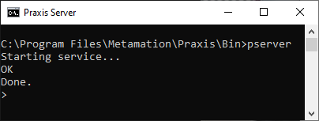
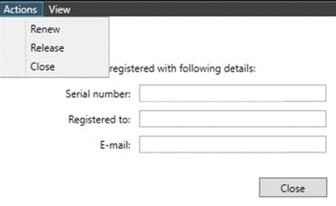

Αλλαγή άδειας χρήσης
Εάν μια άδεια χρήσης χρειάζεται να ενημερωθεί ή να επεκταθεί, αυτό μπορεί να γίνει ακολουθώντας τα παρακάτω βήματα:
Κλείστε το λογισμικό και τις υπηρεσίες στον διακομιστή (Pserver και Pmonitor).
Εκκινήστε μια γραμμή εντολών DOS σε λειτουργία admin.
Μεταβείτε στο C:\Program Files\Metamation\Praxis\Bin πληκτρολογώντας
cd\ και πατώντας Enter.
Πληκτρολογήστε PSERVER και πατήστε Enter

Πληκτρολογήστε LIC και πατήστε Enter και θα δείτε να εμφανίζεται το παρακάτω παράθυρο διαλόγου.

Κάνοντας κλικ στο Actions έχετε τις ακόλουθες επιλογές:
-
Renew η οποία θα επιχειρήσει να ανανεώσει την άδεια χρήσης.
-
Release η οποία θα ακυρώσει την καταχώρηση της άδειας χρήσης και θα την καταστήσει διαθέσιμη για καταχώρηση σε νέο υπολογιστή.
-
Close η οποία θα κλείσει το τρέχον παράθυρο διαλόγου.
Κάνοντας κλικ στο View μπορείτε να επιλέξετε Details και θα εμφανιστούν οι πληροφορίες σχετικά με την τρέχουσα άδεια χρήσης.
| Για να τεθεί σε ισχύ μια αλλαγή ανανεωμένης άδειας χρήσης, πρέπει να επανεκκινήσετε τις εφαρμογές / υπηρεσίες Pserver μετά την ανανέωση. |